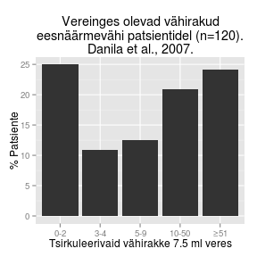

Vähi siirded ehk metastaasid
Onkobioloogia
Taavi Päll
vanemteadur, VTAK
Recap
Metastaasid
Vähi kollete levimine algsest primaarsest paikmest keha teistesse osadesse. Selliseid sekundaarseid vähikoldeid nimetatakse vähi siireteks ehk metastaasideks. Vähi siire koosneb rakkudest mis on sarnased vähirakkudele algses paikmes.
Vähk on evolutsiooniline protsess

Metastaaside klonaalse selektsiooni mudel
- Tegemist on nö. "Darwinliku selektsiooni" protsessiga.
- Klassikalise klonaalse selektsiooni mudeli kohaselt moodustavad metastaase algses vähis asuvad minoorsed rakud.
- Selline haruldane rakukloon selekteeritakse sekundaarses paikmes ja ta suudab ekspandeeruda/kasvada.
- Eksisteerivad spetsiifilised metastaasi mutatsioonid/geenid.

Alternatiivne mudel
Metastaasi potentsiaal on suuremas osas algses vähimassis olemas
- Vähi metastaseerumise ennustab algse vähimassi geeniekspressioon.
- Rinnavähi halva prognoosi geenimuster 'poor prognosis' signature.
- Halva prognoosi geenimuster sisaldab geene mis reguleerivad rakutsüklit, invasiooni ja angiogeneesi.
- Metastaseerumise põhjustavad samad onkogeensed stiimulid/geenid, mis põhjustasid ka algse vähi tekke.


Metastaseerumise protsess
Kliiniliselt detekteeritava metastaasi tekkeks peab toimuma terve rida juhuslikke sündmusi
- Metastaseerumise käigus peavad vähirakud kõigepealt organismis laiali kanduma ja uutes asukohtades ellu jääma ning hiljem suutma jaguneda et moodustuks sekundaarne vähk.
- Protsess sisaldab
- vähirakkude migreerumist,
- lokaalset ivasiooni,
- sisenemist vereringesse,
- arresteerumist sekundaarses koes ja veresoonest väljumist ning
- lõpuks uue koloonia moodustamist.
- Koloniseerumine omakorda eeldab mitmeid samme, nagu vähirakkude ellujäämist, mikrometastaaside moodustumist, pikaajalise latentsusperioodi üleelamine ja kasvu reaktiveerimine.
Tsütokeratiin positiivsed rinnavähi mikrometastaasid regionaalses lümfisõlmes.

Metastaasi etapid

Metastaasi ebaefektiivsus
- Tuumorist lahkub vereringesse igapäevaselt tuhandeid vähirakke.
- Kliinilise metastaasi moodustavad ainult väga väikene osa vereringesse sisenenud vähirakke.

Kolonisatsioon on metastaseeruvate vähirakkude peamine pudelikael
- Suur osa sekundaarsesse koesse jõudnud vähirakkudest ei jagune ja jäävad dormantsesse seisundisse.

Seed and soil hüpotees
Komplementaarne kahe eelneva mudeliga

- 1889. a. pakkus Inglise kirurg Stephen Paget välja nn. seed and soil hüpoteesi, mis tänapäevaselt tähendab, et vähirakud annavad metastaasi kui nad satuvad sobivasse koe mikrokeskkonda.
Vähirakkude sisenemist vereringesse vahendavad makrofaagid
- Perivaskulaarsed makrofaagid loovad vähis metastaatilise mikrokeskonna (tumor microenvironment of metastasis).
- Vähirakkude ja makrofaagide vahel toimub EGF/CSF-1 parakriinne signalisatsioon.
- Vähirakkude poolt sekreteeritav CSF-1 indutseerib vähi makrofaagidel EGF-i ekspressiooni, mis positiivse tagasisidena omakorda indutseerib vähirakkudel veelgi CSF-1 ekspressiooni.

Vähirakkude intravaseerumine
Metastaatiline latentsus
Kliiniliselt on see periood, mis jääb vähi avastamise ja detekteeritavate metastaaside tekke vahele
- Raku tasemel väljendub latentsus
- vähiraku jagunemise arrestis ja vaikeolekus (dormantsus);
- mitteproduktiivses jagunemises, kus jagunemine on balanseeritud apoptoosi poolt;
- tüvirakuliste omaduste kadumine (loss of stem cell fitness/stemness).
Metastaatilise latentsuse kadu: VCAM-1 vahendatud osteoklastide värbamine
- Rinnavähi mudelis on leitud, et sellisest dormantsusest väljunud luu mikrometastaasid on hakanud ekspresseerima enda pinnal VCAM-1 molekuli Lu et al., 2011.
- VCAM-1 ekspressioon värbab dormantse vähiraku juurde \(\alpha 4 \beta 1\) integriine ekspresseerivad monotsüüdid, mis diferentseeruvad luud lagundavateks osteoklastideks. VCAM-1 on \(\alpha 4 \beta 1\) integriini ligand mille kaudu lümfotsüüdid arresteeruvad veresoone pinnal.
- Osteoklastide aktiveerumisega vabaneb luu maatriksist rohkelt kasvufaktoreid tekib nö. nõiaring (vicious cycle).

Metastaatilise latentsuse kadu: sekundaarse koe strooma rakud sekreteerivad tüvirakulisust supresseerivat faktorit
- Rinnavähi kopsumetastaasid hakkavad sekreteerima tüvirakulisust pärssiva TGF-\(\beta\) perekonna ligandi BMP4 blokeerivat faktorit Coco Gao et al., 2012.
- Coco ekspressioon neutraliseerib parakriinse BMP ja võimaldab vähirakkude reaktivatsiooni.